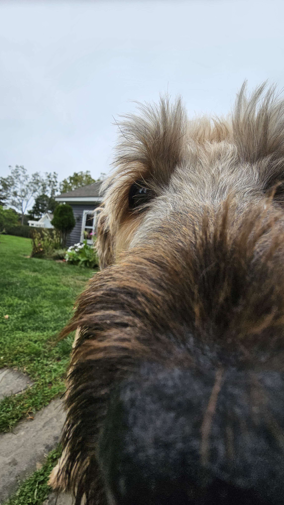

Hello! My name is Cooper and I am a second term software engineering student at NEIT! My biggest hobby is playing Minecraft and I have a considerable amount of hours. A fun fact about me is that I used to stream Minecraft content on Twitch. I've been interested in computers for a long time, and by coming to NEIT, I am pursuing a career in what I enjoy. I also have 2 dogs named Brody and Noah, who are Briards and both over 90 pounds.
